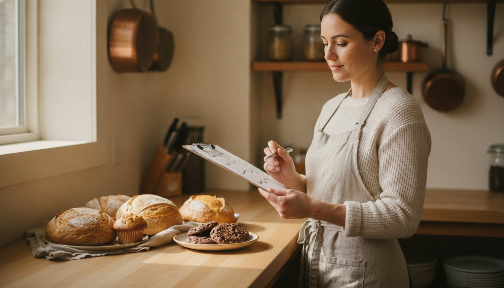

Lately I've been getting the same question from new members, over and over: "How many items should I put on my food safety plan? Should I include every possible thing I might make in the future?"
It's a great question — and the answer surprises most people: No. You do not want to list every product you can dream up.
Here's why a shorter, focused food safety plan is almost always the smarter move — and how to decide what actually belongs on yours.
A 100-Item Plan Takes Forever to Approve
Your food safety plan gets reviewed before you're approved to start producing. Every single product you list is something that has to be looked at — its ingredients, how it's made, where the risks are, and how you control them.
So the longer your list, the longer that review takes. A plan with 100 items doesn't make you look ambitious or prepared — it makes your approval crawl. Each item is one more thing to check, question, and go back and forth on before you get the green light.
A tight plan with a handful of well-documented products is far easier — and much faster — to get approved. And getting approved is the whole point, because that's when you can finally start selling.
Be Honest About How Much You Can Actually Make
Here's a reality check that clears things up fast: look at your kitchen hours.
If you're planning to use, say, 20 to 40 hours of kitchen time a month, there is simply no way you're producing 100 different products. The math doesn't work. Most small food businesses realistically make a small core of products — especially in their first year.
Your food safety plan should reflect what you're actually going to produce, not a wish list of everything you could theoretically bake someday.
Start With What You're 100% Sure About
So where do you land? List only the products you are completely certain you'll make.
- Keep it under 20 items.
- Ideally under 10.
- These are your bread and butter — the products you'll launch with, the ones you already know how to make and plan to sell right away.
Everything else can wait. A focused plan gets you approved and selling faster, which matters far more than looking comprehensive on paper.
Pro Tip: If a product is still a "maybe" — you haven't finalized the recipe, or you're not sure it'll sell — leave it off for now. There's no penalty for adding it later, and every "maybe" you include just slows down approval of the products you're sure about.
You Can Always Add Items Later
This is the part most people don't realize: your food safety plan isn't set in stone.
If, six months from now, you decide to add a couple of new products, you don't start over. You simply update your existing plan and submit those new items for approval.
Approving two new items on a plan that's already approved is quick and straightforward — nothing like trying to push 100 items through all at once at the very beginning. So there's no reason to front-load everything up front.
Start lean, get approved, start selling — and grow your plan as your business grows.
The Bottom Line
More items on your food safety plan isn't better. It's slower.
Start with the products you're 100% sure about — under 20, ideally under 10 — get approved, and start making money. Then add new items down the road as you expand. It's so much easier that way.
Once you know your list, here's a head start on actually writing the plan: How to Use ChatGPT to Create a Comprehensive Food Safety Plan.
And if you're going through this for the first time, you don't have to do it alone. Free permit assistance is included with every membership at Sincerely Kitchen — we help you build your food safety plan and get your Fraser Health approval sorted, step by step.
Book a free kitchen tour and let's get your food business approved and selling.